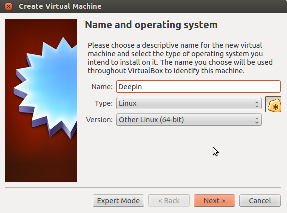

What is Deepin?
Deepin is a Linux distribution, based on Debian. It's unique, user-friendly, and very easy to use. You can download Deepin 2015 Alpha 2 from here. Make sure you download the correct version for you (32-bit or 64-bit). If you don't have it already, you can download Oracle VM VirtualBox from here. These steps work for both Windows and Linux operating systems.

Setting up the virtual machine
Once you have VirtualBox installed, we can step right into the installation of Deepin. Click on the New button in VirtualBox to begin. Write Deepin in the Name field, choose Linux from the Type drop-down list, and choose Other Linux (32-bit or 64-bit). Next, choose the amount of RAM (notice that VirtualBox makes suggestions based on your computer's specifications), and then create a new virtual hard-disk. A new dialog box will open, where you'll set up the virtual hard-disk. You can choose it to be dynamically allocated (it grows in size when needed, up to a limit you set), although many prefer the Fixed size option, since it usually makes the virtual machine faster and does not fragment the host operating system. Pay attention that 8GB are required to install the system, so choose a size greater than that.